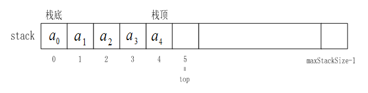

一、堆栈的基本概念：
堆栈（也简称作栈）是一种特殊的线性表，堆栈的数据元素以及数据元素间的逻辑关系和线性表完全相同，其差别是线性表允许在任意位置进行插入和删除操作，而堆栈只允许在固定一端进行插入和删除操作。
先进后出：堆栈中允许进行插入和删除操作的一端称为栈顶，另一端称为栈底。堆栈的插入和删除操作通常称为进栈或入栈，堆栈的删除操作通常称为出栈或退栈。
备注：栈本身就是一个线性表，所以我们之前讨论过线性表的顺序存储和链式存储，对于栈来说，同样适用。
二、堆栈的抽象数据类型：
数据集合：
堆栈的数据集合可以表示为a0,a1,…,an-1，每个数据元素的数据类型可以是任意的类类型。
操作集合：
（1）入栈push(obj)：把数据元素obj插入堆栈。（2）出栈pop()：出栈, 删除的数据元素由函数返回。（3）取栈顶数据元素getTop()：取堆栈当前栈顶的数据元素并由函数返回。（4）非空否notEmpty()：若堆栈非空则函数返回true，否则函数返回false。
三、顺序栈：
顺序存储结构的堆栈称作顺序堆栈。其存储结构示意图如下图所示：

1、顺序栈的实现：
（1）设计Stack接口
（2）实现SequenceStack类
注：栈是线性表的特例，线性表本身就是用数组来实现的。于是，顺序栈也是用数组实现的。
代码实现：
(1)Stack.java:（Stack接口）
package com.yc.stack;
/**
* Created by yucheng on 2018/8/24.
*/
public interface Stack {
// 压栈
public void push(Object obj) throws Exception;
// 弹栈
public Object pop() throws Exception;
// 获取栈顶元素
public Object getTop() throws Exception;
// 判断是否为空
public boolean isEmpty();
}
(2)SequenceStack.java:
package com.yc.stack;
/**
* Created by yucheng on 2018/8/24.
*/
public class SequenceStack implements Stack {
Object[] stack; // 对象数组(栈用数组来实现)
final int defaultSize = 10;// 默认最大长度
int top; // 栈顶位置（的一个下标），可以理解成栈的实际长度
int maxSize; // 最大长度
// 无参的构造器
public SequenceStack() {
init(defaultSize);
}
public SequenceStack(int size) {
init(size);
}
// 初始化方法
private void init(int size){
maxSize = size;
top = 0;
stack = new Object[size];
}
@Override
public void push(Object obj) throws Exception {
// 判断栈是否已满
if(top == maxSize){
throw new Exception("堆栈已满！");
}
stack[top] = obj;
top++;
}
@Override
public Object pop() throws Exception {
// 判断栈是否为空
if(isEmpty()){
throw new Exception("堆栈为空！");
}
// 注意：本质上这个对象在这一次操作中并没有被删除
top--;
return stack[top];
}
@Override
public Object getTop() throws Exception {
if(isEmpty()){
throw new Exception("堆栈为空！");
}
return stack[top-1];
}
@Override
public boolean isEmpty() {
return top == 0;
}
}
2、测试类：
设计一个顺序栈，从键盘输入十个整数压进栈，然后再弹出栈，并打印出栈序列。
代码实现：
(3)Test.java:
package com.yc.stack;
import java.util.Scanner;
/**
* Created by yucheng on 2018/8/24.
*/
public class Test {
public static void main(String[] args) throws Exception{
SequenceStack ss = new SequenceStack();
Scanner in = new Scanner(System.in);
int temp;
for (int i = 0;i < 10;i++){
System.out.println("请在屏幕输入第" + i + "数据：");
temp = in.nextInt();
ss.push(temp);
}
for (int i = 0;i < 10;i++){
System.out.print(ss.pop() + " ");
}
}
}
运行效果：

四、Java中栈与堆的区别：
栈(stack):（线程私有）
是一个先进后出的数据结构，通常用于保存方法(函数)中的参数，局部变量。在java中,所有基本类型和引用类型的引用都在栈中存储。栈中数据的生存空间一般在当前scopes内(就是由{...}括起来的区域)。
堆(heap):（线程共享）
是一个可动态申请的内存空间(其记录空闲内存空间的链表由操作系统维护)，C中的malloc语句所产生的内存空间就在堆中。在java中，所有使用new xxx()构造出来的对象都在堆中存储，当垃圾回收器检测到某对象未被引用，则自动销毁该对象。所以，理论上说java中对象的生存空间是没有限制的，只要有引用类型指向它，则它就可以在任意地方被使用。
五、hashCode与对象之间的关系：
如果两个对象的hashCode不相同，那么这两个对象肯定也不同。
如果两个对象的hashCode相同，那么这两个对象有可能相同，也有可能不同。
总结一句：不同的对象可能会有相同的hashCode；但是如果hashCode不同，那肯定不是同一个对象。
代码举例：
package com.yc;
/**
* Created by yucheng on 2018/8/24.
* String特点：
* String s1 = "china";与String s1 = new String("china");的区别：
* 1.String s1 = "china";只会在方法区的字符串常量池中创建对象，在堆中并不会创建对象
* 2.String s1 = new String("china");不仅会在方法区的字符串常量池中创建对象也会在堆内存中创建对象
* 3.只要new一次，绝对会在堆内存创建新的对象，即使你的内容相同，但是在字符串常量池中一种内容却永远只有
* 一个
*
* hashCode:
* String很特殊，重写从父类继承过来的hashCode方法，使得两个
* 如果字符串里面的内容相等，那么hashCode也相等。
*
* 原始的hashCode:
* identityHashCode方法用于获取原始的hashCode
* 如果原始的hashCode不同，表明确实是不同的对象
*/
public class StringTest {
public static void main(String[] args) {
//s1 和 s2 其实是同一个对象。对象的引用存放在栈中，对象存放在方法区的字符串常量池
String s1 = "china";
String s2 = "china";
//凡是用new关键创建的对象，都是在堆内存中分配空间。
String s3 = new String("china");
//凡是new出来的对象，绝对是不同的两个对象。
String s4 = new String("china");
System.out.println(s1 == s2); // true
System.out.println(s1 == s3); // false
System.out.println(s3 == s4); // false
System.out.println(s3.equals(s4));// true
System.out.println("============================");
// String很特殊，重写从父类继承过来的hashCode方法，使得两个
// 如果字符串里面的内容相等，那么hashCode也相等。
// hashCode相同，因为hashCode只与内容有关
System.out.println(s1.hashCode()); //hashCode为94631255
System.out.println(s2.hashCode()); //hashCode为94631255
System.out.println(s3.hashCode()); //hashCode为94631255
System.out.println(s4.hashCode()); //hashCode为94631255
System.out.println("=============================");
// 原始的hashCode
System.out.println(System.identityHashCode(s1));//identityHashCode为1571470755
System.out.println(System.identityHashCode(s2));//identityHashCode为1571470755
System.out.println(System.identityHashCode(s3));//identityHashCode为1955088479
System.out.println(System.identityHashCode(s4));//identityHashCode为524783806
}
}
String类重写了hashCode方法，他们的hashCode相同，但原始的hashCode是不同的。